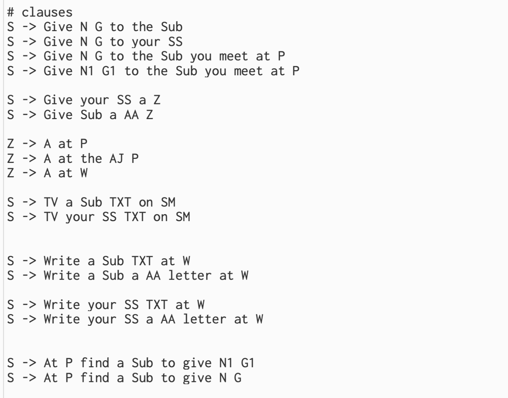
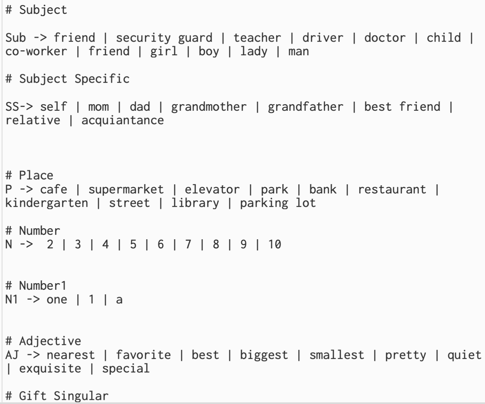
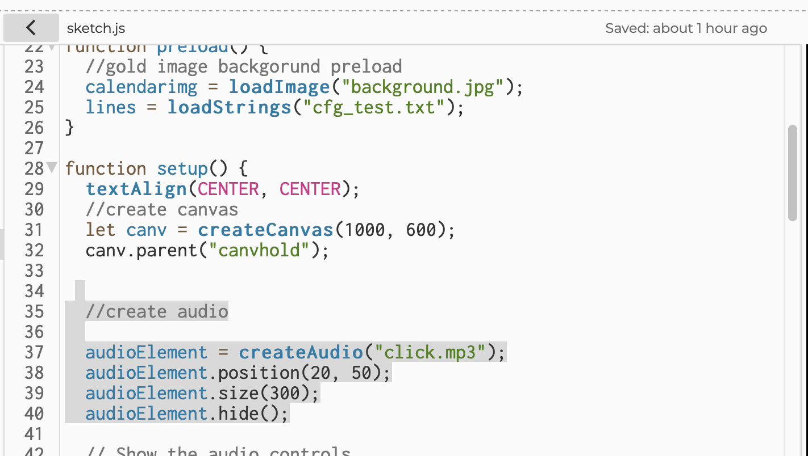
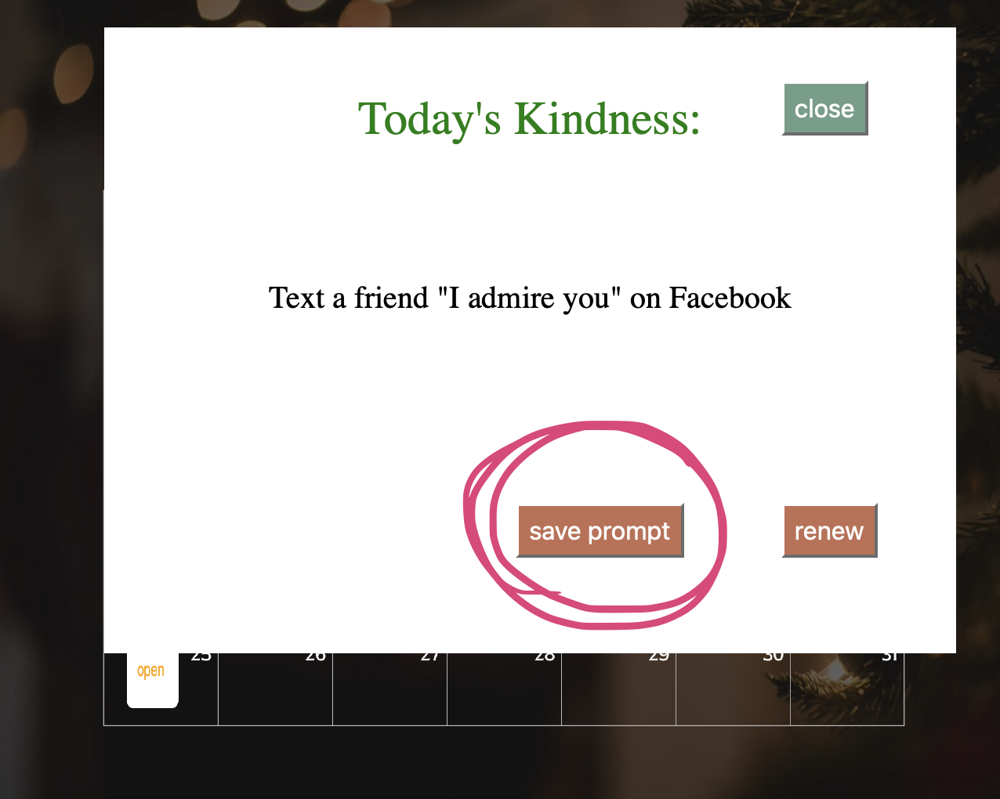
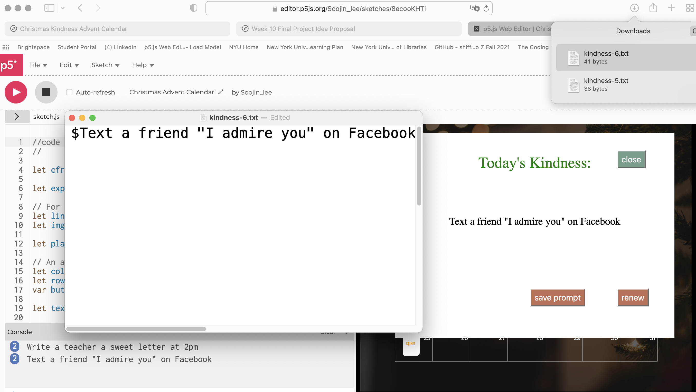
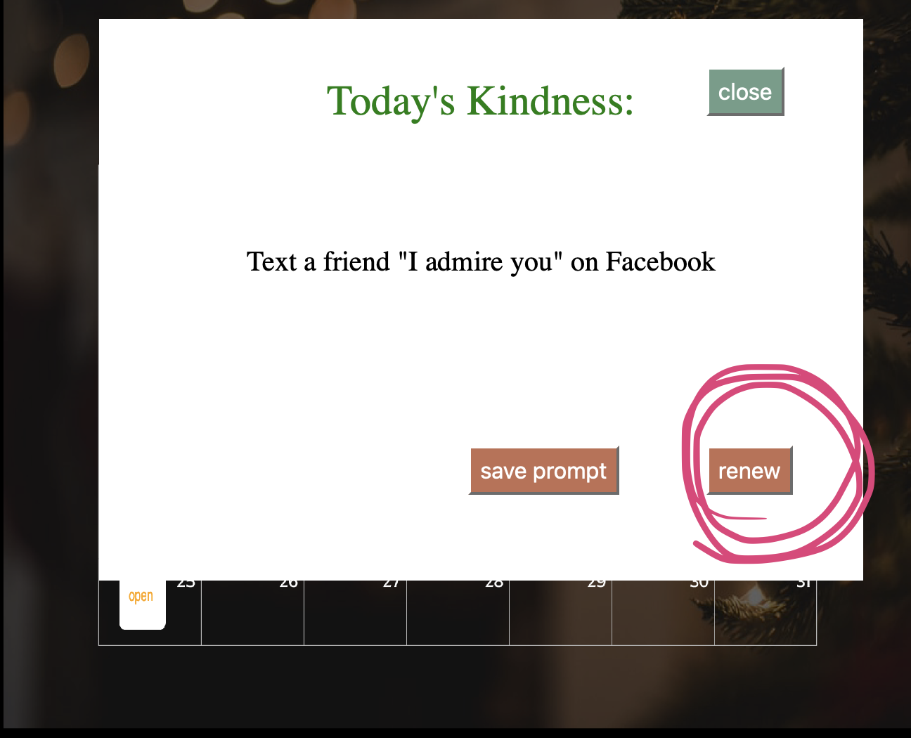
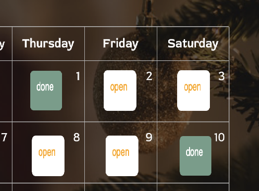
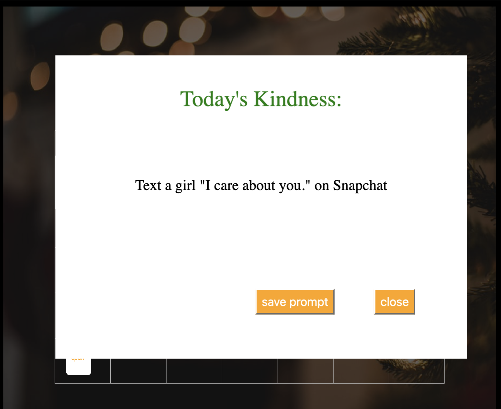

Christmas Kindness Advent Calendar
Author: Soojin Lee Date: 10, Dec, 2021
| Christmas Kindness Advent Calendar
It is the time of the year where you start to hear Jingles and see Christmas decorations on the street. As the Christmas approaches, I made this project hoping to make the community around me a kinder place to live in. With a little creativity, we can share "heart-warming" moments to people around us, and Christmas Advent Calendar will make it easier for you. Receive a randomly generated kindness prompts everyday, and practice them to make your and others' Christmas to be a warmer one.
| Final Prototype
Click
here to access p5.js editor.
| User-testing and Feedback
On December 1st, I proposed my final project idea and the
working prototype to the class. Here is the feedback I received.
- On click, add Christmas Jingle to make it more festive.
- Consider using getDate(); to only allow the access on the specific date.
- Allow people send, and save challenge prompt to their email.
- Collect people's achievements / feedback
| Challenges & Process
Writing CFG
Clauses

Terminals

Load Sound not Working

Instead, I used createAudio(); as a solution.

| UX/UI Design
Save Prompt


Using Save Prompt function, users can save the daily challenge to their own computer device. If they press the button, it will automatically save the prompt as a txt file.
Renew

The whole purpose of this challenge is to encourage and incentivize people to spread the act of kindness, not to punish for not completing. Therefore, if the user wants to receive a new prompt, they can click renew button to receive a new challenge prompt.
Done!

Once users have completed, the button is no longer functional. Instead, the button will change to Christmas themed Green color with a text that says "Done".
| Reflection + Moving Forward
Intent VS Impact

While the intent of the project was intended to share kindness, some of the prompt may yield undesirable impacts.
Next Steps
- Instead of saving prompt as txt file, allow users to send challenge prompt to their email or any social media account they wish.
- Add an array of Jingle sound and select randomly so find a Christmas Sound API to provide different Jingle sound everyday for the users.
- Share project with friends and family around.
| Reference & Citation